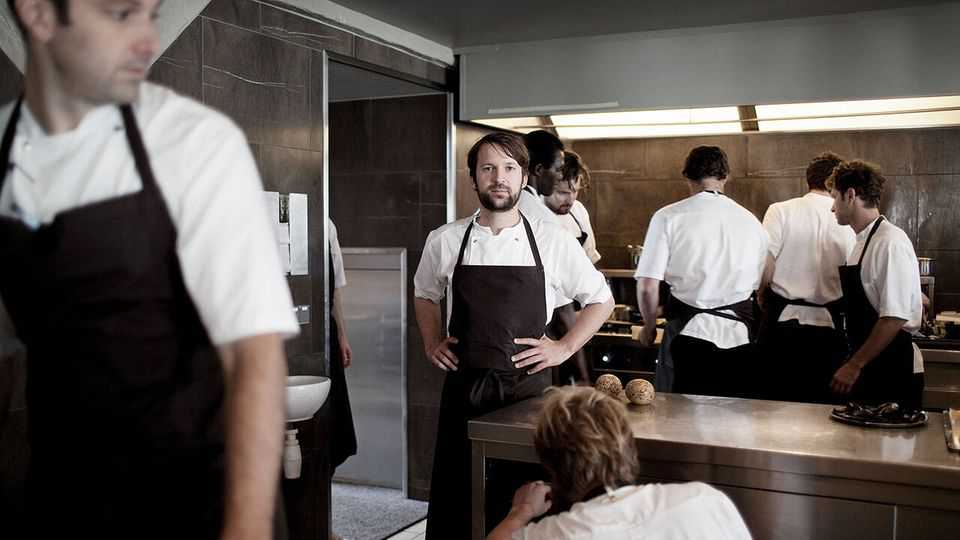
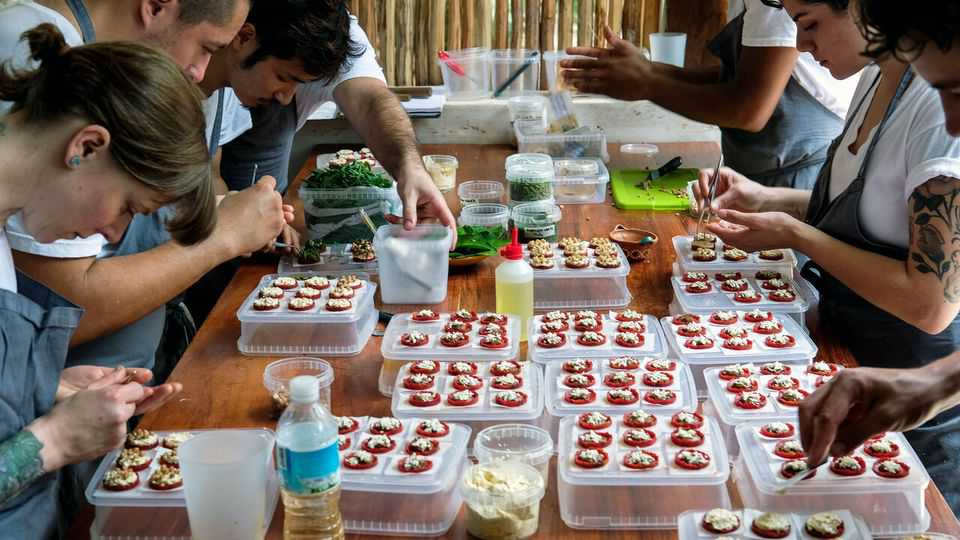
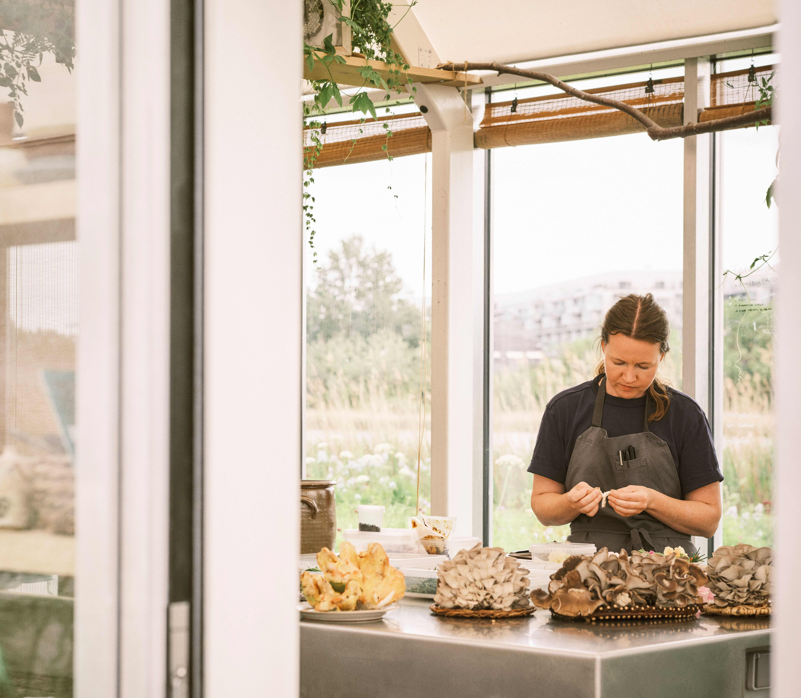

The rock-star chef is off the menu at Noma
The world’s most famous restaurant hopes to reinvent its kitchen culture

Aug 6th 2026
Everyone knows about Noma. The Nordic fine-dining restaurant dares diners to spoon brains from smoked ducks’ heads or eat salads crawling with snails. Since its founding in 2003, Noma has been through umpteen incarnations, from its Copenhagen restaurant (which has relocated once and closed twice) to residencies in Los Angeles and Tokyo. On August 5th Noma reopened at its previous site in Copenhagen.
Despite all this travelling, most turbulence has been inside the kitchen. In March the New York Times published allegations that René Redzepi (pictured top), the head chef, had abused staff between 2009 and 2017, as Noma chased its third Michelin star. (Mr Redzepi said he did not “recognise all [the] details” in the article, but was “deeply sorry” and has “worked to change”.) Noma has reopened without any Michelin stars or its star chef. Mr Redzepi is “creative director”, not the man at the pass.

Rock-star chefs were once indulged. In the 1990s and 2000s people were hungry for macho cooks: Marco Pierre White, an English chef, dumped his underlings in rubbish bins for “time out”; Gordon Ramsay became famous for losing his temper and calling people things like “idiot sandwich”. Anthony Bourdain’s book, “Kitchen Confidential”, portrayed chefs as miscreants. Yet somehow cheffing seemed glamorous.
Portrayals of chefs have matured. “The Bear”, a hit show that ended in June, follows a brilliant but traumatised chef. (It is hinted that he used to work at Noma.) This month “Tony”, a biopic of Bourdain, will show his formative years in hellish kitchens. In a forthcoming series Mr White, Mr Ramsay and Heston Blumenthal will reflect on their “fights, fall-outs and feuds”.
Off-screen, chefs are calling for better working conditions. Amanda Cohen of Dirt Candy, a Michelin-starred restaurant in New York, says young cooks have high expectations. Chefs once endured harsh kitchens to “make their résumé”, she notes, but now they have more leverage. In America, for instance, 1.2m hospitality workers left the industry during the pandemic.

Even Noma is adapting. Mette Brink Soberg (pictured above), who will lead the kitchen with Pablo Soto, the head chef, says that Noma is adopting shorter working hours. It is replacing its three seasonal menus with rolling changes, which will make the work less stressful and repetitive. Drudgery, such as deseeding pumpkins, will be shared out.
Can this cordial environment last? Restaurants are stressful places to work; Noma is under a lot of scrutiny. But if its culture really has changed, chefs who still can’t stand the heat may have to follow Mr Redzepi out of the kitchen.■